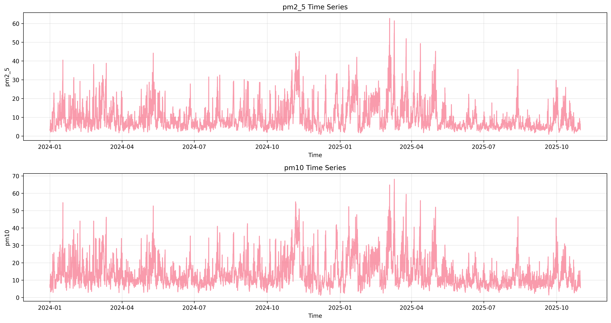

Visualizations
Distribution Plot

Time Series Plot
Correlation Plot

Data Source: test_data
Generated: 2025-10-28T20:08:12.590794
Analysis Period: 2025-10-01 to 2025-10-05
Key statistics for numeric variables:
Variables most correlated with AQI:
This EDA report was automatically generated by the AQI forecasting system.
For more details, check the dashboard or contact the data team.